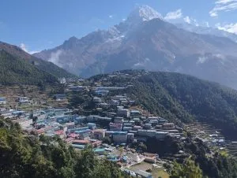
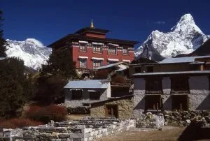
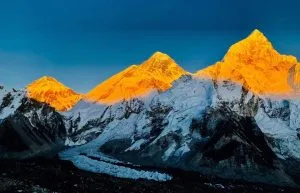
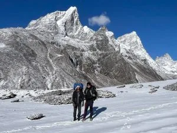
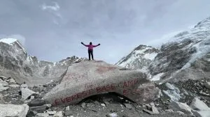

1. Beyond the Goal: The Experiential Wonders of the Khumbu Trail
Too many trekkers reduce the Everest Base Camp trek to a simple mathematical exercise: 130 kilometers, 14 days, 5,364 meters. When you fixate solely on the destination rock at Base Camp, you risk missing the extraordinary cultural, spiritual, and sensory riches that surround you every single mile of the way.
The Khumbu Valley is the ancestral sanctuary of the Sherpa people, an ethnic group who migrated from eastern Tibet over 500 years ago. Their culture of hospitality, profound reverence for sacred peaks (Mount Everest is worshipped as Chomolungma, 'Goddess Mother of the World'), and devotion to Tibetan Buddhism permeate every village, suspension bridge, and stone chorten.
Whether you are a photography enthusiast, a culture lover, a mountaineering history buff, or an adventure seeker, here is our definitive curation of the finest experiences along the world's most famous trekking route.
2. Top Experiences Along the EBC Trail Ranked (Summary Matrix Table)
To help you plan your daily schedule and prioritize your energy, here is a master comparison of the premier highlights along the trail:
| Rank | Experience / Highlight | Location & Altitude | Trek Day | Prime Time of Day | Primary Appeal |
|---|---|---|---|---|---|
| 01 | Dawn Sunrise over Everest from Kala Patthar | Kala Patthar (5,545m) | Day 09 | Dawn (5:00 AM – 6:30 AM) | Unrivaled 360° mountain panorama; golden dawn light |
| 02 | Attend Monk Chanting at Tengboche Monastery | Tengboche (3,867m) | Day 04 | Afternoon (3:00 PM Puja) | Profound spiritual ceremony; Tibetan horn acoustics |
| 03 | Cross the Double Hillary Suspension Bridge | Dudh Koshi Gorge (3,050m) | Day 02 & 11 | Mid-morning (9:30 AM) | Adrenaline-charged suspension walk 135m above river |
| 04 | Sip Espresso at Hotel Everest View Terrace | Above Namche (3,880m) | Day 03 | Morning (8:30 AM – 10:30 AM) | World-record luxury altitude view; Ama Dablam panorama |
| 05 | Visit Thokla Pass Everest Climbers Memorial | Thokla Pass (4,830m) | Day 07 | Midday (11:30 AM – 1:00 PM) | Emotional homage to Scott Fischer & fallen mountaineers |
| 06 | Touch the Iconic Prayer-Flag Rock at EBC | Everest Base Camp (5,364m) | Day 08 | Early Afternoon (1:00 PM – 2:30 PM) | Expedition milestone; touching the active Khumbu Glacier |
| 07 | Climb Nangkartshang Peak for 360° Giants | Above Dingboche (5,083m) | Day 06 | Morning (7:30 AM – 11:00 AM) | Direct vistas of Makalu (8,485m), Lhotse, and Island Peak |
| 08 | Explore the Saturday Market & Bakeries in Namche | Namche Bazaar (3,440m) | Day 02 & 10 | Afternoon & Saturday morning | Barista coffee, fresh apple strudel, Sherpa handicraft shopping |
3. Experience the Adrenaline Rush of Flying into Tenzing-Hillary Airport (Lukla)

Your adventure begins with one of the most thrilling aviation experiences in commercial flight history. The flight from Kathmandu or Ramechhap to Tenzing-Hillary Airport in Lukla (2,846m) is a roller-coaster of adrenaline and awe.
Flying aboard a 16-passenger Twin Otter or Dornier 228, you bank tightly through river canyons while the snow-capped wall of the High Himalayas rises on your left. The pilots fly entirely by visual flight rules (VFR).
Suddenly, the aircraft lines up with a tiny slit carved into the side of a mountain ridge. Lukla's runway is just 527 meters (1,729 feet) long with a steep 11.7% uphill gradient designed to brake landing aircraft before they strike the solid stone mountain wall at the runway's head. When your tires screech onto the tarmac, the entire cabin inevitably erupts in spontaneous applause!
Flight Seating Secret
When flying from Kathmandu or Ramechhap into Lukla, snag a seat on the LEFT side of the plane for the most breathtaking views of the Himalayan chain. On your return flight from Lukla back to Kathmandu, sit on the RIGHT side!
4. Cross the Dizzying Hillary Suspension Bridge High Above the Dudh Koshi

On Day 2 between Jorsalle and Namche Bazaar, you encounter the architectural wonder of the lower trail: the Hillary Suspension Bridge.
Spanning a massive gorge at the confluence of the Bhote Koshi and Dudh Koshi rivers, the bridge hangs more than 135 meters (440 feet) above the churning glacial torrent. Uniquely, the modern high bridge hangs directly above an older, decommissioned suspension bridge below it, creating an extraordinary photographic perspective.
Walking across is a visceral thrill. Draped in thousands of silk khatas and five-color Buddhist prayer flags, the steel-mesh deck sways gently with your footsteps and the valley wind. Pause halfway across, grasp the sturdy wire cables, and look straight down into the roaring white rapids below—it is an unforgettable moment of pure alpine vertigo.
5. Explore Namche Bazaar: Sherpa Capital, Saturday Market & Alpine Bakeries

Perched in a horseshoe-shaped natural amphitheater at 3,440 meters, Namche Bazaar is the beating commercial and cultural capital of the Khumbu. It feels like an alpine fairytale town where ancient Yak caravans brush past modern cafes and outdoor apparel shops.
Top things to do in Namche:
- Visit the Saturday Market: If your schedule aligns with Friday afternoon or Saturday morning, head to the lower market terraces. Lowland farmers carry enormous doko baskets of fresh ginger, garlic, tomatoes, and goat cheese to trade with high-altitude Sherpa herders.
- German Bakeries & Barista Coffee: Namche boasts some of the highest artisan bakeries in the world. Savoring hot apple strudel, walnut chocolate brownies, and double-shot flat whites at Hermann Helmers Bakery is a mandatory ritual.
- The Sherpa Culture Museum: Located on the military ridge above town, this museum features an authentic recreation of a traditional two-story 19th-century Sherpa home, complete with yak pens, ancestral prayer rooms, butter churns, and historical photos of Tenzing Norgay.
- The World's Highest Irish Pub: Celebrate with fellow travelers over a game of pool, draft Guinness, and classic rock music before heading into the dry high zone.
6. Sip Morning Coffee on the Terrace of Hotel Everest View (3,880m)

On Day 3 (your first acclimatization day), the classic hike leads up the steep ridge above Namche to the Hotel Everest View (3,880m), opened in 1971 and listed in the Guinness Book of World Records as the highest-placed luxury hotel on earth.
Built by Japanese visionary Takashi Miyahara using local granite blocks, the hotel features a sprawling stone terrace surrounded by pine and rhododendron groves.
Order a pot of French press coffee or hot ginger lemon tea, sit on the sun-drenched patio, and gaze across the valley. Directly in front of you rises the dark, jagged pyramid of Mount Everest (8,848.86m) trailing its famous white snow plume, bordered by the sheer wall of Lhotse and the impossibly dramatic spire of Ama Dablam. It is widely considered one of the finest morning vistas anywhere on planet Earth.
7. Discover the Ancient Secrets of Khumjung & The Legendary Yeti Scalp
Just a 45-minute walk beyond Hotel Everest View lies the serene, traditional village of Khumjung (3,790m), nestled beneath the sacred peak of Khumbila (the protector deity of the Sherpa people). Unlike bustling Namche, Khumjung retains an ancient, tranquil agricultural pace with stone-walled potato paddies and distinctive green-roofed stone cottages.
Khumjung Monastery & The Yeti Scalp
Founded over 120 years ago, Khumjung Gompa holds one of the Himalayas' most intriguing artifacts: an alleged Yeti Scalp. Preserved inside a locked glass-fronted wooden reliquary cabinet, the conical, reddish-brown tufted scalp can be viewed by visitors for a small donation (~NPR 300) to the resident caretaker monk.
The Sir Edmund Hillary School
Established in 1961 by Sir Edmund Hillary through his Himalayan Trust, this historic institution transformed education across the Solukhumbu. Trekkers can view the bronze statue of Sir Edmund and witness how Sherpa youth are educated in English, Nepali, and their native Sherpa dialect.
8. Attend the Evening Monk Chanting at Sacred Tengboche Monastery

Perched dramatically on a high forest ridge at 3,867 meters, Tengboche Monastery (Dawa Choling Gompa) is the spiritual nucleus of the entire Everest region. All Everest climbing expeditions stop here to receive blessings and silk khatas from the Rinpoche (Head Lama) for safe passage through the mountains.
Every afternoon at approximately 3:00 PM, the monastery opens its heavy wooden doors for the daily Puja (prayer ceremony). Trekkers are welcome to remove their boots, step quietly across the polished wooden floors, and sit cross-legged on meditation cushions along the periphery of the main prayer hall.
Surrounded by intricate silk thangkas, glowing golden statues of Guru Rinpoche, and the sweet scent of burning juniper incense, you will experience the resonant acoustic power of the monks' chanting. Deep bass vocal tones harmonize with the rumbling boom of long telescopic horns (dungchen), the clash of brass cymbals, and the rhythmic beat of double-sided drums. It is a profoundly moving, transcendent experience that resonates deep within your chest.
9. Climb Nangkartshang Peak (5,083m) for 360° Himalayan Giants
On Day 6 in Dingboche (4,410m), your second mandatory acclimatization day presents one of the premier non-technical summit climbs in Nepal: Nangkartshang Peak (5,083m / 16,676ft).
Rising directly north of Dingboche village, the steep trail switchbacks through alpine tundra, dwarf juniper, and lichen-covered boulders. Although steep and lung-testing, the trail requires zero technical rock climbing.
Upon reaching the summit ridge marked by a massive prayer-flag cairn, you are rewarded with an astonishing 360-degree amphitheater of giant peaks:
- Makalu (8,485m): The 5th highest mountain on Earth, rising in a sheer, dark granite pyramid to the east.
- Lhotse (8,516m): The colossal south face towering directly across the Imja Valley.
- Ama Dablam (6,812m): Viewed from an extraordinary northern angle, showing off its dramatic hanging glacier ('Dablam').
- Island Peak (Imja Tse, 6,189m) & Amphu Lapcha: Dominating the upper glaciated headwaters of the Imja Khola.
10. Pay Solemn Homage at the Thokla Pass Climber Memorials (4,830m)

On Day 7, after climbing the grueling terminal moraine above Dughla, you crest the ridge at Thokla Pass (4,830m) and enter one of the most poignant and emotionally powerful places in global mountaineering: the Everest Climbers Memorial.
Spread across a windswept plateau beneath the icy peaks of Lobuche and Cholatse stand more than 100 hand-carved stone chortens, brass plaques, and memorial cairns. Each commemorates a climber, mountaineer, or Sherpa who perished on Mount Everest, Lhotse, or Pumori.
Here you will find the famous stone monument to Scott Fischer (the American Mountain Madness guide who died in the 1996 Everest blizzard immortalized in Into Thin Air), British climber Rob Hall, 10-time Everest summitter Babu Chiri Sherpa, and countless unsung Sherpa mountain workers who gave their lives in service of visiting expeditions.
The wind wails softly through colorful, weathered prayer flags while the immense Khumbu Glacier rumbles below. Almost every trekker removes their hat and walks among the chortens in absolute silence, humbled by the ultimate price of human alpine ambition.
11. Touch the Iconic Prayer-Flag Rock at Everest Base Camp (5,364m)
On Day 8, after hiking across the undulating rubble and glacial meltwater lakes of the lateral moraine from Gorak Shep, you achieve the dream that brought you across the world: standing at Mount Everest Base Camp (5,364m / 17,598ft).
Reaching the famous spray-painted boulder—draped in hundreds of Buddhist prayer flags, silk khatas, and expedition stickers—is an emotional, life-defining milestone. You touch the rock, hug your teammates, and celebrate with your Sherpa guides who safely paced you every step of the way.
While at Base Camp, take time to absorb the extreme environment:
- The Moving Khumbu Glacier: You are standing directly on top of hundreds of meters of active glacial ice. If you stand quietly, you will hear deep cracking booms and groans as the ice moves beneath your feet.
- The Khumbu Icefall: Look directly up-glacier into the labyrinth of towering white seracs, yawning crevasses, and hanging ice blocks that form the treacherous first hurdle of the South Col climbing route.
- The Expedition Tent City (Spring): In April and May, Base Camp transforms into a buzzing international village with mess tents, communications domes, medical clinics, and prayer flags fluttering from tent peaks.
12. Witness the Golden Sunrise from the Summit of Kala Patthar (5,545m)
If Everest Base Camp is the physical goal of the trek, Kala Patthar ('Black Rock', 5,545m / 18,192ft) is its glorious visual climax.
Waking at 3:45 AM at Gorak Shep in -18°C cold, you switch on your headlamp and begin the slow, rhythmic 2-hour uphill slog. As you gain elevation, the eastern horizon begins to glow in faint lavender and indigo.
You reach the rocky summit cairn just as the sun breaks over the Lhotse-Nuptse ridge. Suddenly, the icy summit plume of Mount Everest ignites into blinding, molten gold. You have an unobstructed, panoramic view of:
- The complete southern pyramid and West Ridge of Mount Everest (8,848.86m).
- The sheer 3-kilometer ice wall of Nuptse (7,861m).
- The elegant, conical pyramid of Pumori (7,161m) rising directly overhead.
- The entire sinuous, debris-covered tongue of the Khumbu Glacier stretching down the valley like a frozen serpentine highway.
Standing on Kala Patthar surrounded by prayer flags, watching the highest point on Earth catch the morning sun, is an emotional and spiritual pinnacle that stays etched in your soul forever.
13. Immerse in Authentic Sherpa Hospitality & Teahouse Culture
Long after the mountain memories have settled into photographs, the deepest lasting impression of your Everest trek will be the warmth, humor, and generous spirit of the Sherpa people.
Take time each evening to step away from your smartphone screen and participate fully in the life of the teahouse:
Evening Bukhari Rituals
- Gather around the cast-iron stove with fellow travelers from across the globe, swapping stories of high passes and blisters.
- Watch lodge owners expertly refuel the stove with dried yak dung cakes and light aromatic juniper incense.
- Sample traditional Su-chia (Tibetan salted butter tea), a savory, creamy tea churned with yak butter and salt that provides immediate warmth.
Language & Connection
- Learn basic Sherpa phrases: "Tashi Delek" (blessings and hello), "Thuchi-chhe" (thank you), and "Khamzang" (how are you?).
- Observe how Sherpa families balance ancient Buddhist spiritual devotion with modern Himalayan entrepreneurship.
- Treat your porters and guides as valued expedition partners; share snacks and thank them sincerely for their tireless support.
14. Frequently Asked Questions: Best Things to Do Along the Everest Trail
What is the single best viewpoint on the entire Everest Base Camp trek?
The single best viewpoint is the summit of Kala Patthar (5,545m). From this rocky peak above Gorak Shep, you have an unobstructed, panoramic view of the summit pyramid of Mount Everest, the Nuptse wall, the South Col, Lhotse, and the massive Khumbu Glacier. Base Camp itself does not offer a view of Everest's summit.
Can visitors attend prayer ceremonies at Tengboche Monastery?
Yes. Tengboche Monastery welcomes foreign visitors to observe their daily afternoon Puja (prayer ceremony), which takes place around 3:00 PM. Visitors must remove their shoes at the entrance, maintain silence, avoid pointing their feet directly at the altar, and refrain from using flash photography inside the main hall.
Where can I see the legendary Yeti scalp?
The purported Yeti scalp is kept inside a secure, locked reliquary box in the Khumjung Monastery in Khumjung village (3,790m), just a short hike above Namche Bazaar. The resident monks will unlock the viewing case for visitors in exchange for a small donation (approx. NPR 300 / $2.50 USD) toward monastery maintenance.
Is it worth visiting Hotel Everest View if I am not staying there as a guest?
Yes, absolutely. The terrace at Hotel Everest View is open to the public as a cafe. Visiting for morning coffee or ginger tea during your Day 3 acclimatization walk from Namche Bazaar is one of the premier highlights of the entire trek, offering unmatched views of Everest and Ama Dablam.
What are the Thokla Pass memorials and who is buried there?
The Thokla Pass memorials (located at 4,830m above Dughla) are stone chortens and brass plaques honoring climbers and Sherpas who lost their lives on Mount Everest and surrounding 8,000m peaks. The monuments are cenotaphs (memorials without human remains), including tributes to Scott Fischer, Rob Hall, and legendary Sherpa mountaineers.
What should I buy in the Saturday market in Namche Bazaar?
The Saturday market is an authentic trading hub where you can purchase handmade woolen Yak-hair blankets, felt slippers, traditional brass prayer wheels, incense, and local dried yak cheese (chhurpi). It is also a fascinating place for candid street photography.
Is the sunrise hike up Kala Patthar better than the sunset hike?
Both are spectacular! The sunrise hike is the classic choice because morning mountain skies are almost always crystal clear with zero cloud cover, though temperatures are sub-zero (-15°C to -20°C). Sunset hikes offer dramatic golden-hour side lighting directly on Everest's southwest face, but afternoon clouds often obscure the summit.
Can I visit the expedition tents at Everest Base Camp?
During the Spring climbing season (April–May), commercial expedition camps are set up across the glacier. While the private mess tents and living quarters of climbing teams are restricted for athlete privacy and infection control, trekkers can walk among the outer camp perimeter, touch the famous prayer-flag rock, and chat with Sherpa climbing staff.

Ready to Experience the Himalayas?
Whether you are preparing for high-altitude trekking, cultural circuits, or alpine summit expeditions, start planning a bespoke journey tailored to your fitness, travel season, and style.